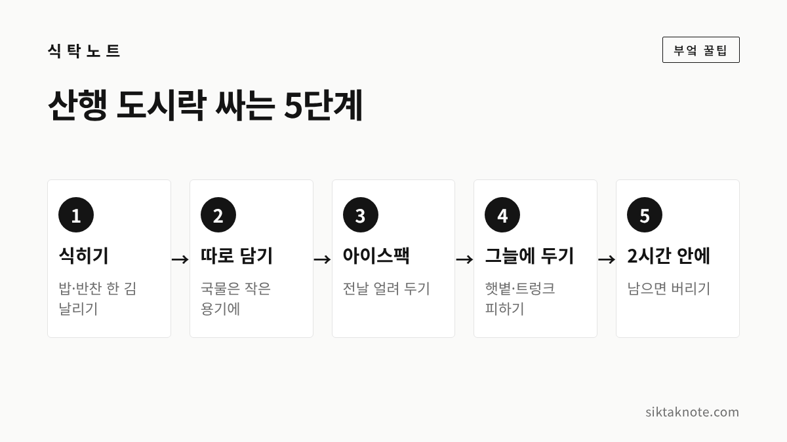

등산 도시락 싸는 법 — 2시간 안에 먹기, 김밥은 터지지 않게

3줄 요약
- 밥과 반찬은 충분히 식힌 뒤 따로 담고, 보냉 가방에 아이스팩을 함께 넣어요.
- 조리한 음식은 실온에 2시간 넘게 두지 않는 것이 식약처 안내입니다.
- 국립공원에서는 지정된 장소 밖에서 취사하지 않고, 쓰레기는 모두 가져 내려와야 합니다.

가을 산에 오르는 날 배낭에 도시락 하나 있으면 든든한데요. 아침저녁 공기가 선선하다 보니 도시락이 상할 거라는 생각은 잘 안 하게 됩니다. 그런데 식품의약품안전처(식약처)는 2018년 가을 나들이 안내에서, 아침저녁은 선선해도 낮에는 기온이 높아 식중독균이 늘 수 있다고 알렸어요. 가을이라서 기준을 낮춰 주는 공식 수칙은 찾지 못했습니다. 계절과 상관없이 같은 원칙을 지키는 쪽이 마음 편합니다.
밥과 반찬은 식혀서 따로 담아요
식약처 안내에서 빠지지 않고 나오는 말이 '충분히 식힌 뒤에 담기'입니다. 갓 지은 밥을 바로 담고 뚜껑을 닫으면 김이 서려 눅눅해지고, 세균이 늘기 좋은 환경이 된다고 해요. 밥은 넓은 그릇에 펼쳐 한 김 식히고, 반찬도 식힌 뒤에 따로 담아 주세요. 뚜껑은 김이 다 빠진 다음에 덮습니다.
국물이 있는 반찬은 작은 용기에 따로 담아야 밥이 젖지 않아요. 양은 한 끼 먹을 만큼만 싸라고 식약처는 안내합니다. 남기지 않을 양이 가장 안전하니까요.

보냉 가방에 아이스팩을 함께
식약처는 도시락을 가져갈 때 가능하면 아이스박스 등으로 10℃ 이하로 보관하고 운반하라고 안내해 왔습니다(2016년 안내). 햇볕이 드는 곳이나 자동차 트렁크에 두지 말라는 말도 함께 나옵니다. 보냉 가방은 찬 기운을 지켜 줄 뿐 음식을 식혀 주지는 못하는데요. 그러니 전날 밤 냉동실에 얼려 둔 아이스팩을 도시락에 닿게 넣고, 도시락은 완전히 식힌 뒤 냉장고에 두었다가 챙기시는 게 좋겠습니다.
산에 도착하면 그늘지고 서늘한 곳에 두세요. 먹기 전에는 비누로 손을 씻고, 물이 없다면 물티슈로 손을 닦는 것도 식약처 안내에 들어 있습니다.

2시간 안에 먹고, 남으면 버립니다
식약처는 조리한 음식을 실온에 2시간 넘게 두지 않도록 안내합니다. 김밥도 가급적 2시간 안에 먹으라고 해요. 산행은 오르는 동안 시간이 훌쩍 가는데요. 도시락을 싼 시각부터 점심때까지 얼마나 걸릴지 헤아려 보시고, 길어질 것 같으면 상하기 쉬운 반찬은 빼는 게 좋습니다.
실온이나 차 트렁크에 오래 있던 음식, 먼 길을 이동한 뒤 남은 음식은 다시 먹지 않고 버리라는 것도 식약처 안내입니다. 식중독균은 맛과 냄새로 구별되지 않는 경우가 많다고 알려져 있으니, 아깝더라도 남은 도시락은 버리시는 게 좋습니다.

산에 가져가기 조심스러운 반찬
달걀을 쓴 음식과 김밥, 도시락은 살모넬라 식중독의 주요 원인 식품으로 꼽힌다고 충청북도가 2023년에 안내한 적이 있습니다. 한 언론 보도에서는 고기나 햄을 넣은 샌드위치, 계란 반찬, 마요네즈로 무친 나물, 잘라 둔 과일을 소풍이나 캠핑에서 오래 두면 위험한 음식으로 꼽았어요.
그래서 이런 반찬은 보냉 가방 한가운데 넣고 먼저 먹거나, 아예 빼는 쪽을 권합니다. 대신 물기를 충분히 줄인 볶음이나 조림은 밥이 젖지 않아 도시락에 잘 맞아요. 먹다 남은 밥도 실온에 두면 세균이 늘 수 있다고 하니, 집에서 남은 밥은 식으면 바로 냉동하세요. 방법은 남은 밥 냉동 보관과 맛있게 데우는 법에 적어 두었습니다.

김밥은 덜 마르고 덜 터지게
김밥은 식약처 안내대로 밥과 속재료를 충분히 식힌 뒤에 마는 것이 먼저입니다. 달걀지단도 완전히 식혀서 쓰세요. 그다음은 집에서 하는 요령인데요. 공식 안내가 아니라 손에 익은 방법이니 참고만 해 주세요.
- 밥은 얇게 펴고 꾹꾹 누르지 않습니다. 밥과 속이 너무 많으면 말 때 터지기 쉬워요.
- 시금치, 오이 같은 속재료는 물기를 꼭 짜고, 단무지도 키친타월로 눌러 닦습니다. 물기가 남으면 김이 눅눅해져 끝이 풀어지기 쉽거든요.
- 김 끝에 물을 살짝 묻혀 붙이고, 다 만 뒤에는 끝부분이 아래로 가게 놓아 잠시 둡니다.
- 겉에 참기름을 얇게 바르면 덜 마르고 김도 덜 찢어져요.
자르는 때는 늦을수록 덜 마릅니다. 다만 산에서 칼과 도마를 쓰기는 번거로우니, 출발 직전에 썰어서 한 줄씩 호일이나 랩으로 단단히 싸 가는 쪽이 현실적이에요. 김발은 1회용 비닐을 쓰거나 열탕 소독해서 쓰라고 식약처가 안내하고 있습니다.

가볍게 들고 갈 반찬과 간식
산에서는 한 번에 많이 먹으면 숨이 찰 수 있어서 소량씩 자주 먹으라는 전문가 조언이 있습니다(2017년 보도). 도시락 말고도 가볍게 집어 먹을 것을 함께 챙기면 좋아요.
- 삶은 달걀: 달걀 조리식품도 조심할 음식이라 보냉 가방에 두었다가 먹기 직전에 까세요.
- 귤, 작은 사과, 방울토마토: 깎지 않고 먹을 수 있어서 편합니다. 귤은 귤 보관법을 참고하세요.
- 견과류, 말린 과일: 가볍고 부피가 작아서 들고 다니기 좋습니다.
- 물: 집에서 준비한 물을 챙기세요. 마셔도 되는지 확인되지 않은 계곡물이나 샘물은 마시지 않는 게 좋습니다.
불은 쓰지 않고, 쓰레기는 되가져옵니다
산에서 따뜻한 국물이 생각나는 날도 있는데요. 국립공원공단 안내 자료에는 국립공원 안에서 지정된 장소 밖의 취사가 금지 행위로 올라 있습니다. 공단은 2023년 가을 단풍철에도 지정된 장소 밖의 야영과 취사를 단속 대상에 넣었습니다. 그러니 휴대용 버너나 가스로 물을 끓이고 음식을 데우는 일은 야영장처럼 정해진 곳이 아니면 하지 않는 게 좋겠습니다. 따뜻한 물은 집에서 보온병에 담아 가면 되고요.
국립공원이 아닌 산도 마찬가지입니다. 남부지방산림청이 올해 9월 가을철 단속을 알리면서, 산림이나 가까운 곳에서 불을 피우거나 화기를 가지고 들어가면 과태료를 물 수 있다고 한 보도가 있었어요. 가려는 산을 관리하는 곳의 안내를 출발 전에 확인하세요.
쓰레기도 같은 원칙입니다. 안내 자료에 따르면 국립공원에서는 쓰레기 되가져가기 운동의 하나로 쓰레기 수거함을 없앤 곳이 있고, 오물이나 폐기물을 함부로 버리는 것은 금지 행위예요. 도시락 용기와 휴지는 물론 달걀 껍데기, 귤껍질까지 모두 가져 내려와야 합니다. 음식물 쓰레기 냄새가 야생동물을 부를 수 있으니 처리를 확실히 하라는 야영 안내도 있습니다. 쓰레기를 가져오면 포인트를 주는 '그린포인트' 제도도 안내되어 있는데, 적립 기준은 탐방지원센터에서 확인해 보세요.
자주 묻는 질문
아침에 쌀쌀하면 아이스팩 없이 싸도 되나요?
기온이 낮은 날에는 아이스팩을 빼도 된다는 공식 안내는 찾지 못했습니다. 식약처는 계절과 상관없이 2시간 기준과 햇볕·트렁크 금지를 안내하고, 2018년에는 가을에도 낮에는 기온이 높을 수 있다고 알렸어요. 가방 속에서 점심때까지 몇 시간을 보낼지 생각하면 아이스팩을 챙기는 쪽이 안전합니다.
김밥을 전날 싸 둬도 되나요?
전날 말아 두면 그만큼 보관 시간이 길어집니다. 식약처가 조리한 김밥을 가급적 2시간 안에 먹으라고 하니 당일 아침에 싸는 걸 권해요. 부득이하게 미리 싸야 한다면 완전히 식혀서 냉장하시되, 냉장고는 상하는 속도를 늦출 뿐 이미 오염된 음식을 되돌려 주지는 못한다는 점을 기억해 주세요.
단풍 보러 가는 길, 도시락까지 든든하고 안전하게 챙겨 가세요. 올해 단풍이 언제 가장 고운지는 2026 단풍 절정 시기에, 설악산과 오대산의 걷기 좋은 코스는 설악산·오대산 단풍에 적어 두었습니다.